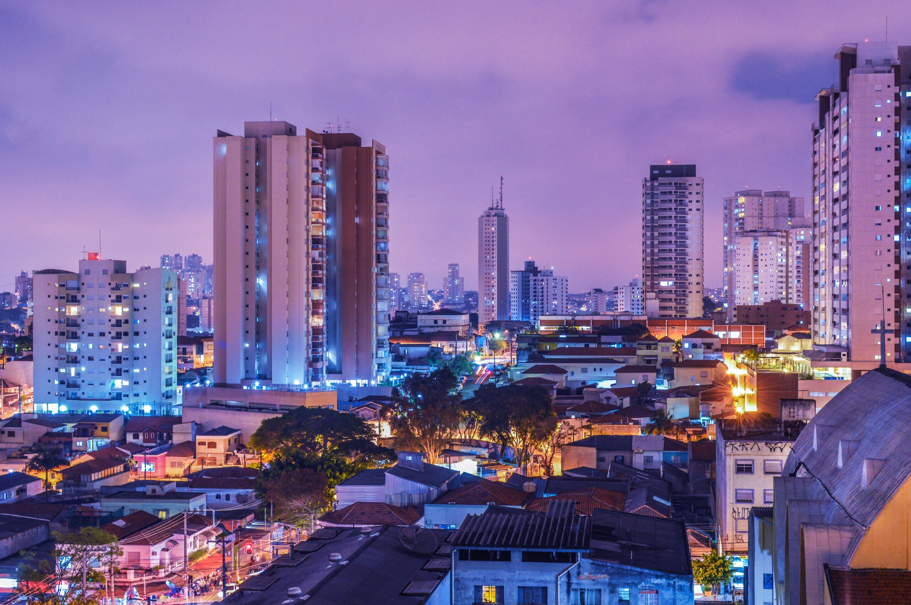

Santo André é uma cidade localizada na região do ABC Paulista, em São Paulo, conhecida por seu desenvolvimento industrial e pela qualidade de vida que oferece aos moradores. Com uma população diversa e crescente, a cidade combina modernidade e tradição, oferecendo diversas opções de lazer, cultura e história para quem a visita.
Entre os principais pontos turísticos de Santo André, destacam-se o Parque Central, um espaço verde perfeito para caminhadas, piqueniques e atividades ao ar livre, e o Parque Celso Daniel, que oferece trilhas e áreas de lazer. O Mercado Municipal é outro destaque, ideal para conhecer a gastronomia local e experimentar produtos frescos. Para quem gosta de história, a Casa do Olhar Luiz Sacilotto e o Museu de Santo André contam mais sobre a trajetória da cidade.
A cidade também oferece passeios gratuitos, como as feiras de artesanato e eventos culturais em praças públicas, além de trilhas e parques que podem ser visitados sem custo. Santo André possui uma economia diversificada, com destaque para a indústria, o comércio e os serviços, sendo considerada um polo importante no ABC Paulista.
A gastronomia em Santo André é rica e variada, com opções que vão desde bares tradicionais e restaurantes italianos até culinária contemporânea. Entre as curiosidades, a cidade é conhecida por ter sido um dos primeiros municípios do Brasil a investir em ciclovias e mobilidade urbana, além de contar com uma vida cultural ativa, com teatros, bibliotecas e eventos musicais ao longo do ano.
